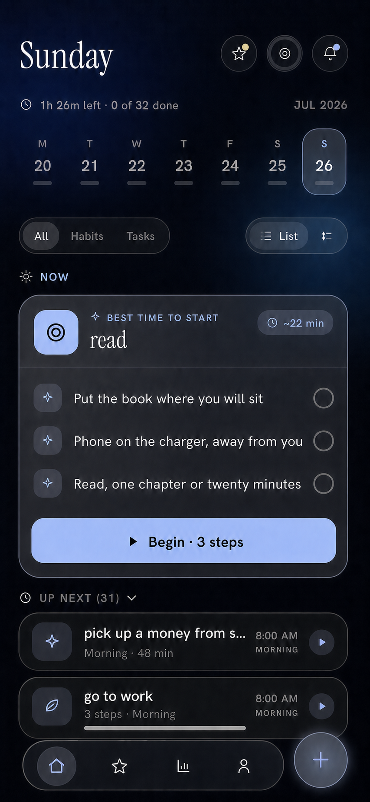

Best time to start
See which task fits the moment.
The behavior-aware daily planner
Beaverly organizes your tasks and habits around your timing, energy, and routines, keeping the next priority connected to clear, doable steps.
Less list-checking. Less replanning. A clearer next move.

01 Your day, intelligently arranged
See which task fits the moment.
Keep the whole day in one view.
Turn intention into something startable.
Why Beaverly
Real days change. Energy rises and falls. Plans get interrupted. Beaverly adds the context a static to-do list misses, so your plan can respond to the day you are actually having.
Bring your day together
Keep tasks, habits, and routines close without making the day feel crowded.
See what fits now
Beaverly surfaces a practical time to begin, while everything else stays organized.
Start with less friction
A vague intention is hard to begin. A clear sequence gives you a real first step, a finish line, and less to figure out in the moment.
The approach
Surface a useful activity when its timing makes sense.
Use clear steps to reduce the gap between intention and action.
See progress and the shape of the day at a glance.
Built for follow-through
Beaverly keeps the whole day accessible, then brings one useful next move into focus. You spend less time scanning, sorting, and rebuilding the plan.
A timely activity comes forward with an estimated duration and a clear way to begin.
Now and Up next work together, so focus never means losing the shape of your day.
Tasks and habits stay connected across the week, even when the plan needs to flex.
One calm system
Zoom out to the week. Come back to the next step. Beaverly keeps both views connected.
Keep perspective without losing today.
Routines belong beside the rest of life.
Make the first move obvious.
Keep moving with a clearer view.
A more useful kind of planner
Questions, answered
A regular planner stores what you intend to do. Beaverly also considers timing, energy, and routines to make the next action clearer.
Yes. The daily view brings tasks and habits together, while filters let you focus on either one.
No. Beaverly is designed to make useful suggestions and keep the day flexible. You stay in control of what you start and when.
Use the early access link below to contact the Beaverly team and request an invite.
A better way into your day
Turn tasks and habits into a plan that fits real life, one clear step at a time.
Request early access See what fits now. Start with less friction.